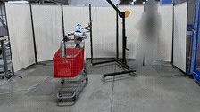
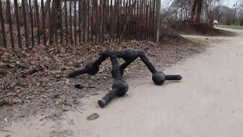
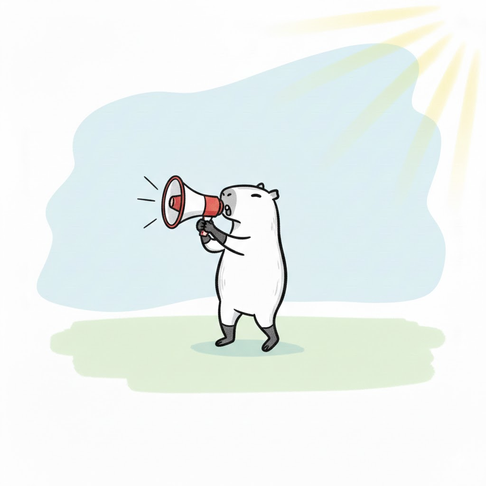
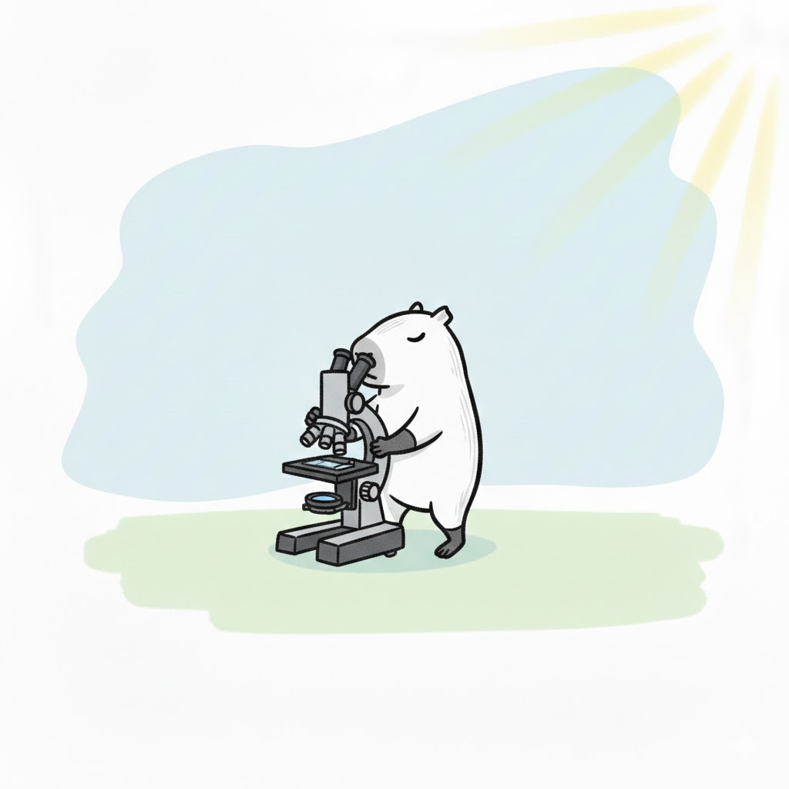
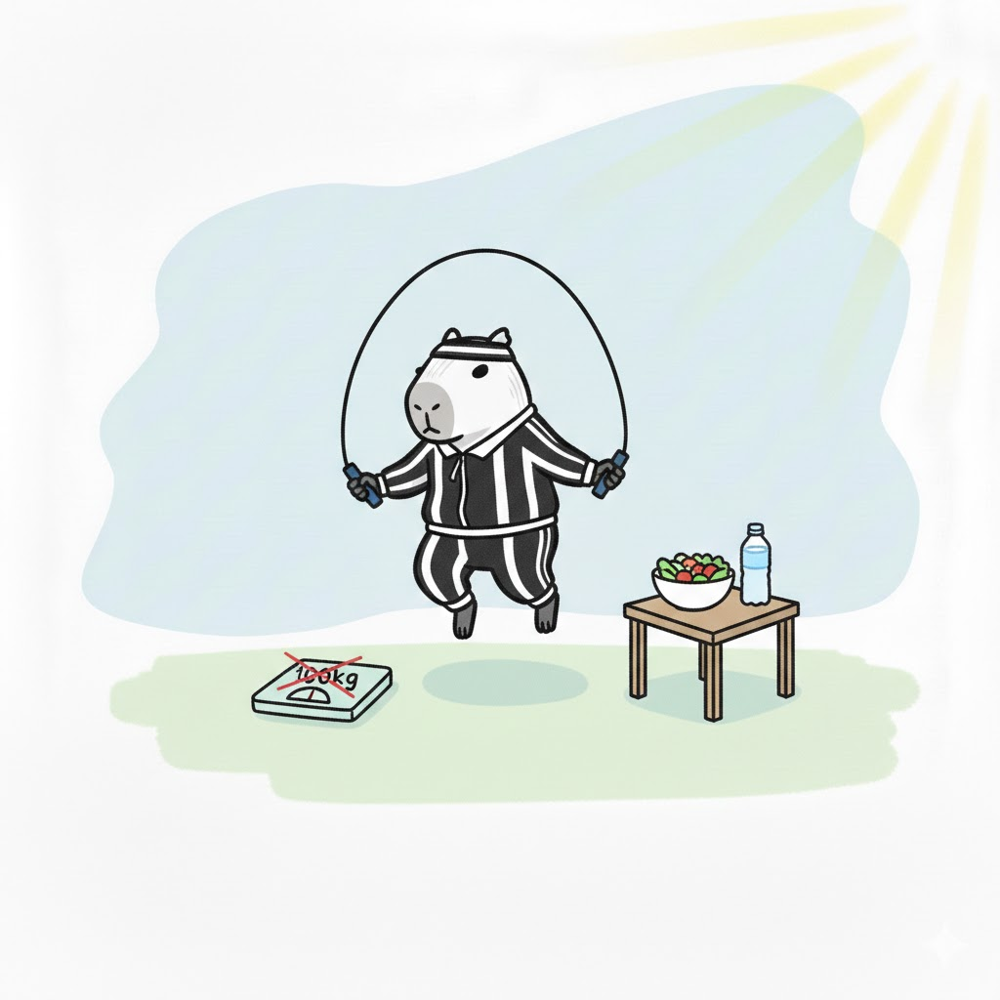

Hi,
I’m Chen Yu.
I am building the future of general-purpose legged robots.
I am a PhD student at Northwestern University (advised by Prof. Sam Kriegman), with over five years of hands-on experience in legged robot sim-to-real transfer. My current research focuses on cross-embodiment control and modular legged robots. A full list of my publications is available on Google Scholar, and all software projects can be found on GitHub.





I maintain several open-source libraries focused on robot control, simulation, and learning. Most of my work is public by default. Check out my GitHub.





